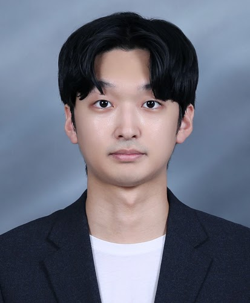

Minjung Kim (Master Graduate Student)
|  | Graduate Student, Embedded System Architect |
Repository Commit History
 |
Introduction
Full Bio Sketch
Mr. Kim is about to graduate from electronic engineering in Kyungpook National University. He is currently B.S student at ai-soc laboratory. His research interests include overcoming the limits of Embedded System. His recent study is about deadline scheduling algorithm and memory saving technique using struct bit field. Also, he conducts research about implementing hypervisor in MCU, by jumping to function pointer. His future work will be about safety techniques of ARM processors such as Failsafe and Trustzone. And also memory saving techniques using Scratchpad is also his interests. His final goal is to implement safe hypervisor in Embedded MCU.
Research Topic
Shallow OS: Deadline Scheduling & struct bit field
 In an Embedded environment, code modification is not possible at runtime, and the available resources are limited due to its small size. In this paper, we propose some methods to overcome these limitations. One is deadline scheduling. Through deadline scheduling, we can predict when the task will finish. For concerns about starvation, we made a new variable and handle the task to not starve. Other advantage is that we can finish high-priority task faster. Another proposal is the struct bit field. By implementing a bit field, we can use resources more efficiently. We also considered overhead by adding a bit field, which contains additional bitwise operation. We achieved a 50% reduction in memory usage without much difference in execution time.
In an Embedded environment, code modification is not possible at runtime, and the available resources are limited due to its small size. In this paper, we propose some methods to overcome these limitations. One is deadline scheduling. Through deadline scheduling, we can predict when the task will finish. For concerns about starvation, we made a new variable and handle the task to not starve. Other advantage is that we can finish high-priority task faster. Another proposal is the struct bit field. By implementing a bit field, we can use resources more efficiently. We also considered overhead by adding a bit field, which contains additional bitwise operation. We achieved a 50% reduction in memory usage without much difference in execution time.
Multi OS on Lightweighted MCUs
 Unlike the way that only single applications were uploaded to the existing MCU, I downloaded two discrete projects named OS1 and OS2, which I made to act as OS. Each OS has discrete memory sections in both SRAM and flash, which ensure safety. Work for context switching takes place immediately before and after jumping to the Monitoring app. In the function for context switching, not only context save and restore, but also I/O device virtualization occurs. By using I/O virtualization, each OS will be able to feel as if it is exclusively using an I/O device during execution time.
Unlike the way that only single applications were uploaded to the existing MCU, I downloaded two discrete projects named OS1 and OS2, which I made to act as OS. Each OS has discrete memory sections in both SRAM and flash, which ensure safety. Work for context switching takes place immediately before and after jumping to the Monitoring app. In the function for context switching, not only context save and restore, but also I/O device virtualization occurs. By using I/O virtualization, each OS will be able to feel as if it is exclusively using an I/O device during execution time.
Dynamic Round-Robin Scheduling on Bare-Metal Shallow Multi-OS
 In recent years, there has been a tendency to integrate functions using a small number of microcontrollers instead of using multiple microcontrollers in various environments. In order to support this flow, the need for a hypervisor that can use resources light and efficiently has emerged. In this paper, we propose hypervisor using dynamic round robin that can fluidly adjust the time quantum according to the urgent of each OS. In addition, a monitor mode was created to manage resources between each OS, and an ultra-light context switch was added to the monitor mode to increase responsiveness while managing multiple OS. When using the system proposed in this paper, the execution time of the test code decreased by about 36 percent compared to the traditional round-robin. Moreover, in terms of power, an average gain of about 3mA was achieved, and it was found that the ultra-light context switch uses only about 5 percent of the cycle compared to FreeRTOS.
In recent years, there has been a tendency to integrate functions using a small number of microcontrollers instead of using multiple microcontrollers in various environments. In order to support this flow, the need for a hypervisor that can use resources light and efficiently has emerged. In this paper, we propose hypervisor using dynamic round robin that can fluidly adjust the time quantum according to the urgent of each OS. In addition, a monitor mode was created to manage resources between each OS, and an ultra-light context switch was added to the monitor mode to increase responsiveness while managing multiple OS. When using the system proposed in this paper, the execution time of the test code decreased by about 36 percent compared to the traditional round-robin. Moreover, in terms of power, an average gain of about 3mA was achieved, and it was found that the ultra-light context switch uses only about 5 percent of the cycle compared to FreeRTOS.
Publications
Journal Publication (KCI 2)
Minjung Kim and Daejin Park. Implementation of Hypervisor through Interrupt-based Context Wwitching and Memory Division Between OS in Embedded Systems (KCI) Journal of the Korea Institute of Information and Communication Engineering, 2024.
Minjung Kim and Daejin Park. Implementation and Performance Optimization of Digital Twin in Vehicle Electronic Control Systems Using Non-Contact Magnetic Sensors and Double Buffer Structure (KCI) IEMEK Journal of Embedded Systems and Applications, 2024.
Conference Publications (Intl. 2)
Minjung Kim and Daejin Park. Efficient Execution of On-Chip Embedded Software Using Pre-Emulation on Shallow OS In 14th International Conference on Mobile Computing and Ubiquitous Networking (ICMU 2023), 2023.
Minjung Kim and Daejin Park. Implementation of Dynamic Round Robin Scheduling on Bare-Metal Shallow Multi-OS for Lightweighted Microcontrollers In IEEE COMPSAC 2024, 2024.
Minjung Kim and Daejin Park. Hypervissor-based Safe Embedded Software Execution on Concurrent Multi-Cores (Under Review) In IEEE Dependable Secure Computing 2024, 2024.
Participation in International Conference
IEEE ICMU 2023, Kyoto, Japan
IEEE COMPSAC 2024, Osaka, Japan
IEEE EMSOFT 2024, Raleigh, USA
IEEE DSC 2024, Tokyo, Japan
Last Updated, 2024.8.10